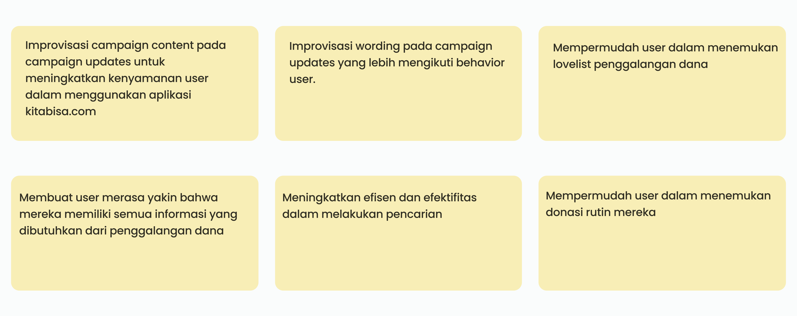

Kitabisa
Aplikasi Kitabisa adalah platform donasi yang digunakan untuk membantu masyarakat dalam menyalurkan bantuan atau donasi kepada orang atau korban yang membutuhkan bantuan. Aplikasi Kitabisa memiliki misi yaitu mempertemukan orang atau korban yang membutuhkan dan juga masyarakat yang ingin menyalurkan bantuan atau donasinya. Di dalam aplikasi Kitabisa terdiri dari Donor(Donatur) yaitu orang yang mendonasikan bantuan. Kemudian Donation yaitu donasi atau bantuan yang diberikan dan Campaigner adalah orang yang menggalang dana.

Objektif
Aplikasi Kitabisa memiliki salah satu menu Inbox yang berisi informasi dan kabar terbaru terhadap donasi yang sudah dilakukan oleh Donor/Donatur. Dalam hal ini Kitabisa memiliki tujuan yaitu:
- Menyediakan dan mempermudah menemukan informasi mengenai pembaharuan kampanye. Hal ini akan membuat para donatur dapat terlibat secara emosional dengan kampanye yang telah didonasikan.
- Mendorong donatur untuk melakukan donasi kembali ke kampanye yang telah dibantu atau kampanye lainnya yang berhubungan dengan kampanye sebelumnya.
Subjektif
- Role : UI/UX Designer
- Tools : Figjam/Figma
- Waktu : 3 Bulan
-
Tugas :
- Mendefinisikan masalah dan membuat solusi mengenai masalah tersebut
- Membuat rancangan dan prototype dari tampilan desain pada studi kasus tersebut
- Mendefinisikan hasil usability testing ke dalam tampilan desain antarmuka yang sudah dibuat
Proses Desain
Proses desain adalah suatu proses iterasi yang dilakukan dalam meningkatkan usability atau penggunaan dan juga mengoptimalkan desain tampilan yang lebih optimal. Dalam suatu proses desain terdapat berbagai macam cara. Design Thinking sebagai bagian dari proses desain yang akan kami terapkan pada studi kasus yang telah dipilih. Design Thinking adalah suatu pendekatan yang berpusat kepada manusia yakni Human Centered Design dan mengintegrasikan antara kebutuhan manusia, kebutuhan bisnis, dan teknologi yang diterapkan saat ini


Define
Define adalah mendefinisikan masalah yang ada pada user dari hasil emphatize dan membuat kemungkinan solusi yang bisa dibuat. Dalam studi kasus kali ini menggunakan aplikasi Figjam untuk mendefinisikan masalah dan kemungkinan solusi (How Might We)
Mendefinisikan User Pain Points

How Might We
Ideate
Ideate adalah proses brainstorming menentukan solusi yang harus dibuat berdasarkan How Might We yang sudah dipilih tadi. Di dalam studi kasus kali ini proses ideate memiliki beberapa tahap yaitu:
Ideate Stages
Ideate Stage digunakan untuk menampung solusi sesuai How Might We yang sudah dipilih

Affinity Diagram
Affinity diagram adalah proses memetakan kumpulan informasi yang akan ditampilkan ke dalam konten suatu aplikasi secara spesifik

Prioritization Idea
Prioritization Idea dilakukan agar solusi yang didapat bisa dikelompokkan menurut dari solusi dari suatu masalah yang dianggap penting dan meupakan suatu prioritas pada aplikasi yang akan dibangun

User Flow
User Flow dilakukan untuk menentukan langkah-langkah user dalam mencapai sebuah task. Dalam hal ini yaitu user flow user dalam memilih donasi yang akan dilakukan di dalam aplikasi Kitabisa

Prototype
Proses prototyping pada studi kasus kali ini yaitu merancang tampilan aplikasi yang nantinya digunakan untuk menjadi sebuah flow proses yang digunakan oleh user dan juga merealisasikan solusi yang sudah dibuat ke dalam bentuk user interface
Wireframe
Wireframe digunakan untuk menampilkan rancangan dari hasil sebuah solusi yang nantinya akan dijadikan patokan untuk merancang tampilan yang lebih detail yaitu mockup atau user interface dari sebuah aplikasi. Dalam studi kasus kali ini menggunakan figma untuk merancang wireframe

Design System
Design system adalah sebuah komponen yang dirancang yang nantinya akan dijadikan keperluan perancangan pengembangan dari sisi desain maupun sisi programming. Design System sendiri bertujuan yaitu:
- Menghasilkan konsistensi dari hasil desain yang telah dibuat
- Mempercepat pengerjaan proses desain
- Mengakomodir kebutuhan dari sisi desainer agar mudah digunakan pada saat mendesain ulang tampilan dengan komponen yang sudah dibuat

User Interface
Setelah membuat design system maka langkah selanjutnya yaitu membuat User Interface sesuai wireframe yang dirancang dan menerapkan design system ke dalam tampilan User Inteface

Prototype
Prototype dilakukan sebagai simulasi dari alur user saat menggunakan aplikasi. User Interface yang sudah dibuat dapat digunakan oleh user untuk nantinya user bisa memberi feedback terhadap tampilan yang sudah dibuat dalam usability testing.
Test
Testing atau usability testing kali ini dilakukan agar dapat mencari informasi tentang user, memahami perilaku, kebutuhan, dan motivasi user saat menggunakan aplikasi. Pada tahap kali ini tim kami memutuskan untuk melakukan user research sebagai bagian dari usability testing yaitu melakukan wawancara dengan user dengan kriteria yang sudah ditentukan yaitu:
- Berusia 18 tahun
- Memiliki pekerjaan dan pendapatan
- Pernah melakukan donasi sebelumnya
- Memiliki smartphone
- Berdomisili di Indonesia
Dalam wawancara kali ini memiliki tahapan yaitu:
- Memperkenalkan diri dan juga tujuan dilakukan wawancara
- Mempersilahkan user untuk memperkenalkan diri
- Memberi pertanyaan kepada user terkait aplikasi yang akan diujikan
- Memberi prototype terkait desain yang akan diujicobakan ke user
- Memberi pertanyaan terkait beberapa fitur pada prototype yang diujicobakan ke user
- Melakukan dokumentasi dari hasil wawancara dan juga feedback yang diberikan oleh user
Dari tahapan wawancara tadi kemudian menghasilkan simpulan dari user yaitu:
- Pada kategori yang diberikan pada menu Inbox user masih harus membedakan antara berita, pesan, dan kabar terbaru
- Icon pada filter dianggap tidak sesuai oleh user
- User kesulitan dalam menemukan donasi rutin yang sudah dilakukan
Kemudian setelah ada feedback, kami mulai memilih feedback dari user kemudian mengubah tampilan sesuai dengan feedback yang diberikan oleh user.
Kesimpulan
Studi kasus kali ini berfokus kepada aplikasi Kitabisa dalam platform aplikasi mobile. Bersumber dari Kitabisa sebagai bentuk pembelajaran untuk melakukan proses desain sesuai apa yang sudah dipelajari. Proses desain sangat membantu dalam membuat user interface aplikasi yang sesuai dengan kebutuhan user dan menerapkan ke dalam teknologi yang dipakai saat ini.